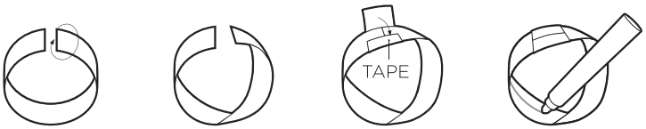
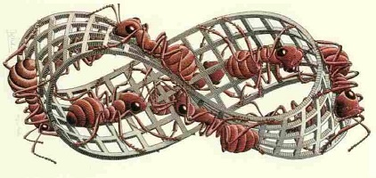

- Subject
- Mathematics
- Objectives
- Students play with paper strips and explore some remarkable mathematical properties a simple sheet of paper has if it’s twisted in a certain way.
- Material
-
- Strips of paper
- Tape
- Scissors
- Pens/markers
- Instructions
-
- Give student two strips of paper, tape, scissors, and marker.
- Have student make a simple ring with paper by connecting one end of the strip to the other with tape.
- Ask the student to draw a line around their simple ring and predict what will happen if the ring is cut along that line.
- Have student cut the ring along the line. The student will end up with two rings.
- Next take one end of the second strip of paper and twist it 180º.
staples or tape.
The student should now have a twisted loop.

- Ask students what they think will happen if you try to draw a line on each side of the paper.
- Take a pencil and see if you can draw on both “sides” of the looped paper without lifting your pencil.
- Ask students what they think is happening.
The following extensions can either be done by the students or as a demonstration by the teacher. Before doing each activity ask students to predict what they think will happen.
- What happens if you cut your loop in half along the middle of the strip? Tip: It is important when you cut the bands that you stay in the centre all throughout the cut. Start the cut at one end and then carefully cut in a straight line, staying in the centre of the band and working your way around the centre of the entire band until you reach the point where you began.
- Take another strip of paper and twist it 360º clockwise (one full twist) before stapling it. What happens if you cut this loop in half?
- Cut along a Mobius strip 1/3 of the way across the strip. Continue cutting around the strip until you meet your starting place. It will take two "rounds". What happens?
- Think about
-
- Ask students if they can think of any real world Mobius strips. Most people have seen Moebius strips before, but perhaps not being aware of it. For example:
- How does it work?
- A Mobius strip is a mathematical oddity that can be used in magic to produce unbelievable
results. Basically, a Mobius strip is a strip of paper which has been given a half twist, and
connected end-to-end. It now has only one side and one edge. As a result the Mobius strip has several curious properties. A line drawn starting from the seam down the middle will meet back at the seam but at the "other side". If continued the line will meet the starting point and will be double the length of the original strip. This single continuous curve demonstrates that the Mobius strip has only one boundary.
Cutting a Mobius strip along the centre line with a pair of scissors yields one long strip with two full twists in it, rather than two separate strips; the result is not a Mobius strip. This happens because the original strip only has one edge that is twice as long as the original strip. Cutting creates a second independent edge, half of which was on each side of the scissors. Cutting this new, longer, strip down the middle creates two strips wound around each other, each with two full twists.
If the strip is cut along about a third of the way in from the edge, it creates two strips: One is a thinner Mobius strip — it is the centre third of the original strip, comprising 1/3 of the width and the same length as the original strip. The other is a longer but thin strip with two full twists in it — this is a neighbourhood of the edge of the original strip, and it comprises 1/3 of the width and twice the length of the original strip.
Some examples of applications of Mobius strips include:
- Giant Möbius strips have been used as conveyor belts that last longer because the entire surface area of the belt gets the same amount of wear.
- As continuous-loop recording tapes (to double the playing time).
- Computer printer and typewriter ribbons, as they allow the ribbon to be twice as wide as the print head while using both halves evenly.
- In molecular engines.
- The Mobius Strip is also found in art and culture. Apart from MC Escher’s painting Mobius Strip II, which feature ants crawling around the surface of a Mobius strip, the Mobius strip has become a popular design for scarves.

- Safety
-
- Caution with scissors
- Program of Study connections
-
- Gr. 2 & 3; Shape and Space (3D-Objects and 2D-Shapes)